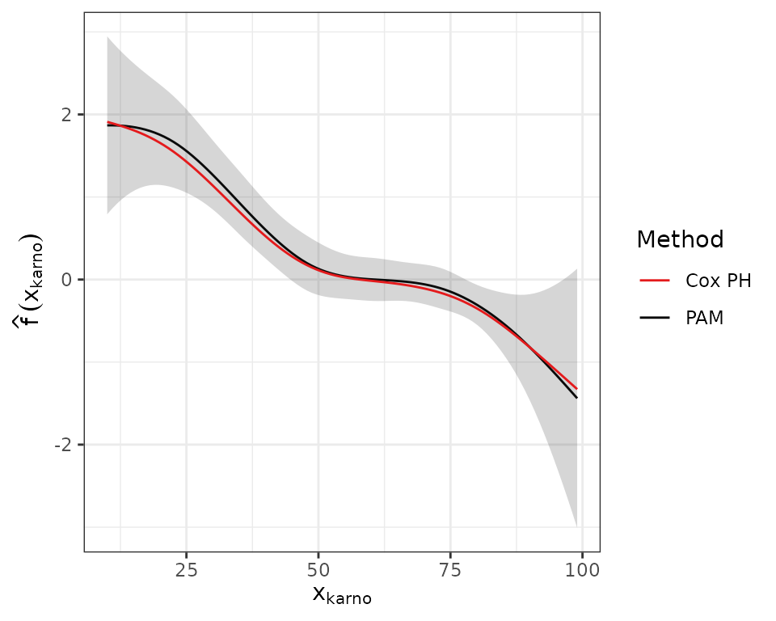

library(dplyr)
library(ggplot2)
theme_set(theme_bw())
library(pammtools)
library(mgcv)
library(survival)
Set1 <- RColorBrewer::brewer.pal(9, "Set1")Veteran’s data
We first illustrate the estimation on non-linear smooth effects using
the veteran data from the survival package:
veteran <- survival::veteran # load veteran package
veteran <- veteran %>%
mutate(
trt = 1+(trt == 2),
prior = 1*(prior==10)) %>%
filter(time < 400)
head(veteran)## trt celltype time status karno diagtime age prior
## 1 1 squamous 72 1 60 7 69 0
## 3 1 squamous 228 1 60 3 38 0
## 4 1 squamous 126 1 60 9 63 1
## 5 1 squamous 118 1 70 11 65 1
## 6 1 squamous 10 1 20 5 49 0
## 7 1 squamous 82 1 40 10 69 1There are two continuous covariates in the data set that could
potentially exhibit non-linear effects, age and
karno. We fit a Cox-PH model and a PAM of the form
and
respectively:
## Cox-PH
cph <- coxph(Surv(time, status) ~ pspline(karno, df=0), data=veteran)
## PAM
ped <- veteran %>% as_ped(Surv(time, status) ~ ., id="id")
pam <- gam(ped_status ~ s(tend) + s(karno, bs="ps"), data=ped, family=poisson(),
offset=offset)The Figure below visualizes the smooth estimates from both models:
Expand here to see R-Code
# crate data set with varying karno values (from min to max in 100 steps)
# and add term contribution of karno from PAM and Cox-PH models
karno_df <- ped %>% make_newdata(karno = seq_range(karno, n = 100)) %>%
add_term(pam, term="karno") %>%
mutate(
cox = predict(cph, newdata=., type="terms")[, "pspline(karno, df = 0)"] -
predict(cph, newdata=data.frame(karno=mean(veteran$karno))))
gg_karno <- ggplot(karno_df, aes(x=karno, ymin=ci_lower, ymax=ci_upper)) +
geom_line(aes(y=fit, col="PAM")) +
geom_ribbon(alpha=0.2) +
geom_line(aes(y=cox, col="Cox PH"))+
scale_colour_manual(name="Method",values=c("Cox PH"=Set1[1],"PAM"="black")) +
xlab(expression(x[plain(karno)])) + ylab(expression(hat(f)(x[plain(karno)])))
# gg_karno
Both methods are in good agreement. The higher the Karnofsky-Score the lower the expected log-hazard. For further evaluation of the Karnofsky-Score effect using time-varying terms of the form and see the time-varying effects vignette.
MGUS data: age example
In the following we consider another example using using data
presented in the respective vignette in the survival
package (see
vignette("splines", package = "survival")).
Cox PH workflow
The example presented in the vignette goes as follows, using the
standard base R workflow and termplot for
visualization:
data("mgus", package = "survival")## Warning in data("mgus", package = "survival"): data set 'mgus' not found## Call:
## coxph(formula = Surv(futime, death) ~ sex + pspline(age, df = 4),
## data = mgus)
##
## coef se(coef) se2 Chisq DF p
## sexmale 0.22784 0.13883 0.13820 2.69335 1.00 0.10
## pspline(age, df = 4), lin 0.06682 0.00703 0.00703 90.22974 1.00 <2e-16
## pspline(age, df = 4), non 3.44005 3.05 0.34
##
## Iterations: 5 outer, 16 Newton-Raphson
## Theta= 0.851
## Degrees of freedom for terms= 1.0 4.1
## Likelihood ratio test=108 on 5.04 df, p=<2e-16
## n= 241, number of events= 225
termplot(mfit, term = 2, se = TRUE, col.term = 1, col.se = 1)PAM workflow
The equivalent fit using PAMs requires the additional step of
transforming the data into a suitable format. We then use
mgcv::gam to fit the model:
## id tstart tend interval offset ped_status sex age
## 1 1 0 6 (0,6] 1.791759 0 female 78
## 2 1 6 7 (6,7] 0.000000 0 female 78
## 3 1 7 31 (7,31] 3.178054 0 female 78
## 4 1 31 32 (31,32] 0.000000 0 female 78
## 5 1 32 39 (32,39] 1.945910 0 female 78
## 6 1 39 60 (39,60] 3.044522 0 female 78
pamfit <- gam(ped_status ~ s(tend) + sex + s(age, bs = "ps"), data = mgus.ped,
method = "REML", family = poisson(), offset = offset)
summary(pamfit)##
## Family: poisson
## Link function: log
##
## Formula:
## ped_status ~ s(tend) + sex + s(age, bs = "ps")
##
## Parametric coefficients:
## Estimate Std. Error z value Pr(>|z|)
## (Intercept) -9.1597 0.1194 -76.685 <2e-16 ***
## sexmale 0.2461 0.1362 1.807 0.0708 .
## ---
## Signif. codes: 0 '***' 0.001 '**' 0.01 '*' 0.05 '.' 0.1 ' ' 1
##
## Approximate significance of smooth terms:
## edf Ref.df Chi.sq p-value
## s(tend) 1.001 1.002 67.11 <2e-16 ***
## s(age) 1.001 1.002 90.01 <2e-16 ***
## ---
## Signif. codes: 0 '***' 0.001 '**' 0.01 '*' 0.05 '.' 0.1 ' ' 1
##
## R-sq.(adj) = 0.000299 Deviance explained = 5.19%
## -REML = 1350.2 Scale est. = 1 n = 28326For visualization of the smooth effects we can use the default
mgcv::plot.gam function:
layout(matrix(1:2, nrow = 1))
termplot(mfit, term = 2, se = TRUE, col.term = 1, col.se = 1)
plot(pamfit, select = 2, se = TRUE, ylim = c(-4, 3.5))In this example the PAM approach estimates a linear effect of age,
which is consistent with the estimation using coxph, as
there is only weak non-linearity.
MGUS data: Hemoglobin example
Another example from the same vignette shows that estimated effects are very similar if the effect of the covariate is in fact strongly non-linear:
Monotonicity constraints
The vignette in the survival package further discusses
enforcing monotonicity constraints on the effect of hgb.
These can be achieved here more easily using the functionality provided
in the scam package (see also Pya
and Wood (2015)). The usage is exactly the same as before,
replacing the call to gam with a call to scam
and specifying bs = "mpd". Note that the fit using
constraints takes considerably longer compared to the unconstrained
fit.
library(scam)
mpam <- scam(ped_status ~ s(tend) + age + s(hgb, bs = "mpd"), data = mgus2.ped,
family = poisson(), offset = offset)
layout(matrix(1:2, nrow = 1))
plot(pamfit2, select = 2, se = TRUE, ylim = c(-0.75, 2), main="Unconstrained fit")
# 1.72 = intercept difference between pamfit2 and mpam
const <- abs(coef(pamfit2)[1] - coef(mpam)[1])
plot(mpam, select = 2, se = TRUE, ylim = c(-.75, 2), main="Fit with monotonicity constraint")